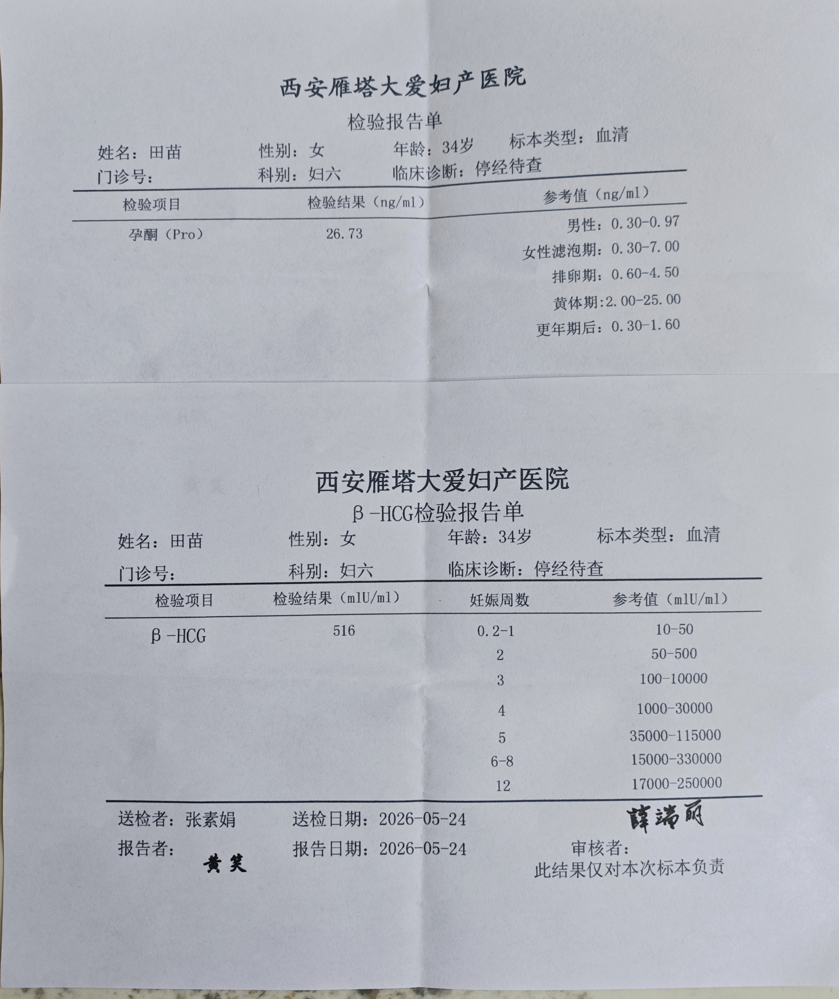

今天 · 2026-05-24 · 第一次确认
孕 3 周
孕 3 周
+ 3 天
预产期约 2027-02-04。现在还很早，后续以医生和早孕 B 超校正为准。
首页只保留最重要的摘要。报告、交流记录、来源和知识库已经拆到二级页面，后续内容多了也不会挤在一起。
预产期约 2027-02-04。现在还很早，后续以医生和早孕 B 超校正为准。
点击进入详情页，可看大图和待问医生问题。

西安雁塔大爱妇产医院血检。当前仅记录事实，具体判断以医生结论为准。
内容多了以后从二级页面查看。
这里只放关键节点，详情进入对应页面。
当前孕周和预产期暂按这个日期粗算，后续可能被早孕 B 超校正。
β-HCG 516 mIU/ml，孕酮 26.73 ng/ml。下一步问医生是否复查，并确认早孕 B 超时间。